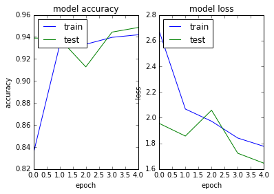

Python 3.5.2 |Anaconda custom (64-bit)| (default, Jul 5 2016, 11:41:13) [MSC v.1900 64 bit (AMD64)]
Type "copyright", "credits" or "license" for more information.
IPython 5.1.0 -- An enhanced Interactive Python.
? -> Introduction and overview of IPython's features.
%quickref -> Quick reference.
help -> Python's own help system.
object? -> Details about 'object', use 'object??' for extra details.
In [1]: runfile('C:/Users/azunre/Documents/NewKnowledge/Repositories/simon/Simon/dev/main_transfer_to_datalake_pip_script.py', args='--config Base.pkl', wdir='C:/Users/azunre/Documents/NewKnowledge/Repositories/simon/Simon/dev')
Using TensorFlow backend.
The available summary of data/labels is:
[('int', 985), ('text', 1118), ('datetime', 219), ('float', 814), ('address', 91), ('boolean', 39), ('phone', 18), ('daterange', 8), ('money', 152), ('percent', 206), ('coordinates', 60), ('email', 5), ('uri', 15)]
DEBUG::Fetching address category from database
DEBUG::500 cells by 91 samples fetched...
DEBUG::Fetching boolean category from database
C:\Users\azunre\Documents\NewKnowledge\Repositories\simon\Simon\dev\FetchLabeledData.py:177: FutureWarning: comparison to `None` will result in an elementwise object comparison in the future.
if(np.any(out_array==None)):
DEBUG::500 cells by 39 samples fetched...
DEBUG::Fetching datetime category from database
DEBUG::500 cells by 219 samples fetched...
DEBUG::Fetching email category from database
DEBUG::500 cells by 5 samples fetched...
DEBUG::Fetching float category from database
DEBUG::500 cells by 814 samples fetched...
DEBUG::Fetching int category from database
DEBUG::500 cells by 985 samples fetched...
DEBUG::Fetching phone category from database
DEBUG::500 cells by 18 samples fetched...
DEBUG::Fetching text category from database
failed reading data/data.cityofnewyork.us/ParkingViolationsIssued-FiscalYear2014August2013June2014.csv
Traceback (most recent call last):
File "C:\Users\azunre\Documents\NewKnowledge\Repositories\simon\Simon\dev\FetchLabeledData.py", line 140, in FetchLabeledDataColumns
col_data = frame.ix[:,column].str[-maxlen:] #do this for large text files
File "C:\Anaconda\envs\py35\lib\site-packages\pandas\core\generic.py", line 2740, in __getattr__
return object.__getattribute__(self, name)
File "C:\Anaconda\envs\py35\lib\site-packages\pandas\core\base.py", line 241, in __get__
return self.construct_accessor(instance)
File "C:\Anaconda\envs\py35\lib\site-packages\pandas\core\strings.py", line 1841, in _make_str_accessor
raise AttributeError("Can only use .str accessor with string "
AttributeError: Can only use .str accessor with string values, which use np.object_ dtype in pandas
failed reading data/data.cityofnewyork.us/PMMRFY2015DataExtract.csv
Traceback (most recent call last):
File "C:\Users\azunre\Documents\NewKnowledge\Repositories\simon\Simon\dev\FetchLabeledData.py", line 140, in FetchLabeledDataColumns
col_data = frame.ix[:,column].str[-maxlen:] #do this for large text files
File "C:\Anaconda\envs\py35\lib\site-packages\pandas\core\generic.py", line 2740, in __getattr__
return object.__getattribute__(self, name)
File "C:\Anaconda\envs\py35\lib\site-packages\pandas\core\base.py", line 241, in __get__
return self.construct_accessor(instance)
File "C:\Anaconda\envs\py35\lib\site-packages\pandas\core\strings.py", line 1841, in _make_str_accessor
raise AttributeError("Can only use .str accessor with string "
AttributeError: Can only use .str accessor with string values, which use np.object_ dtype in pandas
failed reading data/data.cityofchicago.org/Contracts.csv
Traceback (most recent call last):
File "C:\Users\azunre\Documents\NewKnowledge\Repositories\simon\Simon\dev\FetchLabeledData.py", line 140, in FetchLabeledDataColumns
col_data = frame.ix[:,column].str[-maxlen:] #do this for large text files
File "C:\Anaconda\envs\py35\lib\site-packages\pandas\core\generic.py", line 2740, in __getattr__
return object.__getattribute__(self, name)
File "C:\Anaconda\envs\py35\lib\site-packages\pandas\core\base.py", line 241, in __get__
return self.construct_accessor(instance)
File "C:\Anaconda\envs\py35\lib\site-packages\pandas\core\strings.py", line 1841, in _make_str_accessor
raise AttributeError("Can only use .str accessor with string "
AttributeError: Can only use .str accessor with string values, which use np.object_ dtype in pandas
DEBUG::500 cells by 1115 samples fetched...
DEBUG::Fetching uri category from database
DEBUG::500 cells by 15 samples fetched...
DONE w/ SQL queries...!!!
Time elapsed for DB calls (getting data from db+multilabel postprocess) is: 1045.10 sec
C:\Anaconda\envs\py35\lib\site-packages\sklearn\base.py:315: UserWarning: Trying to unpickle estimator MultiLabelBinarizer from version 0.19.1 when using version 0.18.1. This might lead to breaking code or invalid results. Use at your own risk.
UserWarning)
C:\Anaconda\envs\py35\lib\site-packages\sklearn\base.py:315: UserWarning: Trying to unpickle estimator LabelEncoder from version 0.19.1 when using version 0.18.1. This might lead to breaking code or invalid results. Use at your own risk.
UserWarning)
C:\Anaconda\envs\py35\lib\site-packages\Simon\Simon.py:180: UserWarning: Update your `Conv1D` call to the Keras 2 API: `Conv1D(filters=40, padding="valid", strides=1, kernel_size=1, kernel_initializer="glorot_normal", activation="relu")`
subsample_length=1)(embedded)
WARNING:tensorflow:From C:\Anaconda\envs\py35\lib\site-packages\tensorflow\python\util\deprecation.py:497: calling conv1d (from tensorflow.python.ops.nn_ops) with data_format=NHWC is deprecated and will be removed in a future version.
Instructions for updating:
`NHWC` for data_format is deprecated, use `NWC` instead
C:\Anaconda\envs\py35\lib\site-packages\Simon\Simon.py:183: UserWarning: Update your `MaxPooling1D` call to the Keras 2 API: `MaxPooling1D(pool_size=2)`
embedded = MaxPooling1D(pool_length=pool_length)(embedded)
C:\Anaconda\envs\py35\lib\site-packages\Simon\Simon.py:180: UserWarning: Update your `Conv1D` call to the Keras 2 API: `Conv1D(filters=200, padding="valid", strides=1, kernel_size=3, kernel_initializer="glorot_normal", activation="relu")`
subsample_length=1)(embedded)
C:\Anaconda\envs\py35\lib\site-packages\Simon\Simon.py:180: UserWarning: Update your `Conv1D` call to the Keras 2 API: `Conv1D(filters=1000, padding="valid", strides=1, kernel_size=3, kernel_initializer="glorot_normal", activation="relu")`
subsample_length=1)(embedded)
C:\Anaconda\envs\py35\lib\site-packages\Simon\Simon.py:186: UserWarning: Update your `LSTM` call to the Keras 2 API: `LSTM(256, implementation=2, dropout=0.2, return_sequences=False, recurrent_dropout=0.2)`
dropout_U=0.2, consume_less='gpu')(embedded)
C:\Anaconda\envs\py35\lib\site-packages\Simon\Simon.py:188: UserWarning: Update your `LSTM` call to the Keras 2 API: `LSTM(256, implementation=2, dropout=0.2, go_backwards=True, return_sequences=False, recurrent_dropout=0.2)`
dropout_U=0.2, consume_less='gpu', go_backwards=True)(embedded)
C:\Anaconda\envs\py35\lib\site-packages\Simon\Simon.py:191: UserWarning: The `merge` function is deprecated and will be removed after 08/2017. Use instead layers from `keras.layers.merge`, e.g. `add`, `concatenate`, etc.
mode='concat', concat_axis=-1)
C:\Anaconda\envs\py35\lib\site-packages\keras\legacy\layers.py:464: UserWarning: The `Merge` layer is deprecated and will be removed after 08/2017. Use instead layers from `keras.layers.merge`, e.g. `add`, `concatenate`, etc.
name=name)
C:\Anaconda\envs\py35\lib\site-packages\Simon\Simon.py:195: UserWarning: Update your `Model` call to the Keras 2 API: `Model(inputs=Tensor("in..., outputs=Tensor("dr...)`
encoder = Model(input=in_sentence, output=sent_encode)
__________________________________________________________________________________________________
Layer (type) Output Shape Param # Connected to
==================================================================================================
input_2 (InputLayer) (None, 20) 0
__________________________________________________________________________________________________
lambda_1 (Lambda) (None, 20, 71) 0 input_2[0][0]
__________________________________________________________________________________________________
conv1d_1 (Conv1D) (None, 20, 40) 2880 lambda_1[0][0]
__________________________________________________________________________________________________
dropout_1 (Dropout) (None, 20, 40) 0 conv1d_1[0][0]
__________________________________________________________________________________________________
max_pooling1d_1 (MaxPooling1D) (None, 10, 40) 0 dropout_1[0][0]
__________________________________________________________________________________________________
conv1d_2 (Conv1D) (None, 8, 200) 24200 max_pooling1d_1[0][0]
__________________________________________________________________________________________________
dropout_2 (Dropout) (None, 8, 200) 0 conv1d_2[0][0]
__________________________________________________________________________________________________
max_pooling1d_2 (MaxPooling1D) (None, 4, 200) 0 dropout_2[0][0]
__________________________________________________________________________________________________
conv1d_3 (Conv1D) (None, 2, 1000) 601000 max_pooling1d_2[0][0]
__________________________________________________________________________________________________
dropout_3 (Dropout) (None, 2, 1000) 0 conv1d_3[0][0]
__________________________________________________________________________________________________
max_pooling1d_3 (MaxPooling1D) (None, 1, 1000) 0 dropout_3[0][0]
__________________________________________________________________________________________________
lstm_1 (LSTM) (None, 256) 1287168 max_pooling1d_3[0][0]
__________________________________________________________________________________________________
lstm_2 (LSTM) (None, 256) 1287168 max_pooling1d_3[0][0]
__________________________________________________________________________________________________
merge_1 (Merge) (None, 512) 0 lstm_1[0][0]
lstm_2[0][0]
__________________________________________________________________________________________________
dropout_4 (Dropout) (None, 512) 0 merge_1[0][0]
==================================================================================================
Total params: 3,202,416
Trainable params: 3,202,416
Non-trainable params: 0
__________________________________________________________________________________________________
None
C:\Anaconda\envs\py35\lib\site-packages\Simon\Simon.py:202: UserWarning: Update your `LSTM` call to the Keras 2 API: `LSTM(128, implementation=2, dropout=0.2, return_sequences=False, recurrent_dropout=0.2)`
dropout_U=0.2, consume_less='gpu')(encoded)
C:\Anaconda\envs\py35\lib\site-packages\Simon\Simon.py:204: UserWarning: Update your `LSTM` call to the Keras 2 API: `LSTM(128, implementation=2, dropout=0.2, go_backwards=True, return_sequences=False, recurrent_dropout=0.2)`
dropout_U=0.2, consume_less='gpu', go_backwards=True)(encoded)
C:\Anaconda\envs\py35\lib\site-packages\Simon\Simon.py:206: UserWarning: The `merge` function is deprecated and will be removed after 08/2017. Use instead layers from `keras.layers.merge`, e.g. `add`, `concatenate`, etc.
merged = merge([forwards, backwards], mode='concat', concat_axis=-1)
C:\Anaconda\envs\py35\lib\site-packages\Simon\Simon.py:212: UserWarning: Update your `Model` call to the Keras 2 API: `Model(inputs=Tensor("in..., outputs=Tensor("de...)`
model = Model(input=document, output=output)
Checkpoint : checkpoints/text-class.08-0.31.hdf5
C:\Anaconda\envs\py35\lib\site-packages\Simon\Simon.py:218: UserWarning: Update your `Model` call to the Keras 2 API: `Model(inputs=Tensor("in..., outputs=Tensor("de...)`
model = Model(input=document, output=output)
X shape: (3117, 500, 20)
y shape: (3117, 11)
starting learning
WARNING:tensorflow:From C:\Anaconda\envs\py35\lib\site-packages\tensorflow\contrib\learn\python\learn\datasets\base.py:198: retry (from tensorflow.contrib.learn.python.learn.datasets.base) is deprecated and will be removed in a future version.
Instructions for updating:
Use the retry module or similar alternatives.
C:\Anaconda\envs\py35\lib\site-packages\Simon\Simon.py:257: UserWarning: The `nb_epoch` argument in `fit` has been renamed `epochs`.
nb_epoch=nb_epoch, shuffle=True, callbacks=[earlystop_cb, check_cb, loss_history, tbCallBack])
Train on 1870 samples, validate on 935 samples
Epoch 1/5
1870/1870 [==============================] - 1880s 1s/step - loss: 2.6745 - binary_accuracy: 0.8342 - val_loss: 1.9554 - val_binary_accuracy: 0.9390
Epoch 2/5
1870/1870 [==============================] - 1887s 1s/step - loss: 2.0672 - binary_accuracy: 0.9324 - val_loss: 1.8566 - val_binary_accuracy: 0.9383
Epoch 3/5
1870/1870 [==============================] - 1887s 1s/step - loss: 1.9721 - binary_accuracy: 0.9333 - val_loss: 2.0579 - val_binary_accuracy: 0.9128
Epoch 4/5
1870/1870 [==============================] - 1889s 1s/step - loss: 1.8413 - binary_accuracy: 0.9396 - val_loss: 1.7229 - val_binary_accuracy: 0.9444
Epoch 5/5
1870/1870 [==============================] - 1889s 1s/step - loss: 1.7765 - binary_accuracy: 0.9420 - val_loss: 1.6451 - val_binary_accuracy: 0.9486
losses:
[2.6744852089945645, 2.0671775391634135, 1.9721276151305214, 1.8413323373558688, 1.776473779410602]
accuracies:
[0.93903743838243947, 0.93825960605539738, 0.91278560499456474, 0.94438503674644836, 0.94856588406996289]
Time for training is 9457.172145 sec

Starting predictions:
Accuracy: 94.56%
Time: 19.984116792678833s
Time/example : 0.06425761026584834s/ex
311/311 [==============================] - 21s 67ms/step
Remember that the fixed categories are:
['address', 'boolean', 'categorical', 'datetime', 'email', 'float', 'int', 'ordinal', 'phone', 'text', 'uri']
Most Likely Predicted Category/Labels are:
['text' 'int' 'text' 'text' 'int' 'int' 'text' 'int' 'int' 'text' 'int'
'int' 'text' 'float' 'text' 'text' 'text' 'float' 'text' 'text' 'text'
'datetime' 'float' 'int' 'categorical' 'text' 'text' 'text' 'int' 'text'
'float' 'int' 'text' 'categorical' 'int' 'categorical' 'int' 'text' 'int'
'float' 'float' 'float' 'float' 'float' 'float' 'datetime' 'text' 'int'
'text' 'text' 'text' 'float' 'text' 'int' 'int' 'datetime' 'text' 'text'
'datetime' 'float' 'float' 'text' 'text' 'int' 'int' 'int' 'float' 'text'
'text' 'text' 'float' 'int' 'text' 'float' 'text' 'int' 'categorical'
'float' 'float' 'float' 'float' 'text' 'categorical' 'int' 'categorical'
'text' 'categorical' 'text' 'float' 'float' 'text' 'text' 'text' 'float'
'text' 'float' 'categorical' 'float' 'float' 'int' 'int' 'text' 'float'
'text' 'int' 'int' 'float' 'text' 'int' 'text' 'float' 'float' 'float'
'text' 'float' 'int' 'int' 'int' 'text' 'text' 'int' 'text' 'int'
'datetime' 'text' 'float' 'float' 'datetime' 'int' 'text' 'datetime' 'int'
'text' 'text' 'int' 'text' 'text' 'int' 'text' 'int' 'int' 'text' 'int'
'text' 'text' 'text' 'int' 'text' 'int' 'float' 'text' 'text' 'text' 'int'
'int' 'float' 'text' 'int' 'int' 'text' 'float' 'text' 'text' 'text'
'text' 'int' 'datetime' 'int' 'int' 'datetime' 'float' 'int' 'float' 'int'
'int' 'int' 'int' 'text' 'text' 'text' 'int' 'int' 'float' 'int' 'text'
'int' 'float' 'int' 'float' 'datetime' 'int' 'float' 'int' 'categorical'
'text' 'int' 'text' 'datetime' 'categorical' 'int' 'text' 'text' 'text'
'float' 'text' 'int' 'text' 'int' 'float' 'text' 'int' 'text' 'float'
'int' 'text' 'int' 'float' 'datetime' 'text' 'text' 'text' 'datetime'
'int' 'int' 'float' 'float' 'float' 'categorical' 'categorical' 'int'
'text' 'float' 'text' 'int' 'text' 'datetime' 'float' 'int' 'int' 'int'
'float' 'float' 'text' 'float' 'int' 'text' 'text' 'float' 'int' 'text'
'text' 'int' 'int' 'text' 'text' 'float' 'float' 'float' 'text' 'text'
'text' 'int' 'float' 'text' 'int' 'text' 'text' 'int' 'int' 'int' 'text'
'float' 'text' 'text' 'text' 'text' 'text' 'int' 'int' 'text'
'categorical' 'text' 'text' 'int' 'text' 'int' 'float' 'int' 'float'
'float' 'text' 'text' 'int' 'text' 'text' 'text' 'text' 'float' 'text'
'float' 'text' 'int' 'int' 'int' 'float' 'int' 'int' 'text' 'int' 'text'
'float']
Associated max probabilities/confidences:
[ 0.98802119 0.95312756 0.56948084 0.98758614 0.95213324 0.94686443
0.79366994 0.93132776 0.94971913 0.98707271 0.95317078 0.9541977
0.97005695 0.99734807 0.98743594 0.98826373 0.98462856 0.98908943
0.98342115 0.98472613 0.94225532 0.79773909 0.99735367 0.95325035
0.85727155 0.97526109 0.57054549 0.58979338 0.95337194 0.97787493
0.99758863 0.95305598 0.97535264 0.89802772 0.9530946 0.93454534
0.95122588 0.98219705 0.95119953 0.9864406 0.99782526 0.82978249
0.99761021 0.99702889 0.99741048 0.63966745 0.9868831 0.95404309
0.98382324 0.97810102 0.98839593 0.99670321 0.98515296 0.95341474
0.94540799 0.77111614 0.61878663 0.9724524 0.76937193 0.99700028
0.99746668 0.98649359 0.97941941 0.95397896 0.95508748 0.95456755
0.86435467 0.97167236 0.98686719 0.98787385 0.99757892 0.9547891
0.99118829 0.99688655 0.85492814 0.95297509 0.78134179 0.99655825
0.99765658 0.9974612 0.99695277 0.97397655 0.8204 0.9510057
0.87201446 0.98745662 0.91591716 0.98619741 0.99745935 0.98729938
0.98759174 0.97791284 0.98491919 0.99516124 0.98587835 0.9975974
0.89054066 0.99501944 0.99783748 0.95050579 0.95294726 0.98736751
0.70172983 0.97908461 0.95462775 0.95337635 0.99768162 0.93480569
0.95051181 0.97354579 0.9973309 0.99746323 0.99708933 0.93611175
0.96211606 0.94518024 0.93589288 0.95347857 0.97348398 0.97937244
0.94253916 0.97844625 0.88936883 0.75152379 0.97927535 0.99776363
0.99772531 0.76892185 0.95428598 0.98569411 0.79840893 0.95420349
0.97477698 0.96309614 0.95180696 0.97591972 0.97552097 0.95343739
0.98764914 0.95245385 0.95018744 0.98763418 0.94977152 0.97026235
0.97798765 0.98739457 0.95301116 0.91984242 0.95322275 0.99771947
0.98556012 0.97749776 0.97635287 0.95308173 0.95319241 0.99765909
0.98208195 0.80717421 0.95234627 0.97580057 0.9644739 0.98768312
0.98826063 0.98735631 0.96235377 0.95223236 0.76904315 0.95605814
0.95110142 0.75199676 0.99770564 0.94801217 0.87581575 0.95099586
0.95017582 0.95408857 0.94391972 0.97774649 0.97518355 0.9855985
0.93846506 0.95497441 0.99652016 0.95439011 0.98428035 0.95162743
0.99716967 0.95041078 0.9972887 0.79762512 0.95088017 0.9933815
0.95184618 0.81077331 0.97664785 0.95198047 0.98309582 0.75985849
0.87818503 0.95198131 0.98501092 0.96586776 0.97833198 0.99688357
0.97367734 0.94779974 0.98417121 0.94773197 0.99759692 0.97167236
0.95135921 0.98812348 0.99774289 0.95161426 0.9760685 0.95432156
0.99404043 0.83235312 0.98748326 0.9729231 0.9749108 0.78647304
0.94224125 0.95100665 0.997729 0.99775392 0.99748224 0.86724842
0.89457971 0.95132923 0.9853254 0.99731052 0.97868162 0.95286316
0.98686719 0.68778509 0.99762255 0.95131445 0.95021367 0.95143884
0.99693102 0.99753869 0.98747987 0.99047661 0.95143747 0.98759997
0.97316122 0.99731737 0.93405056 0.98813593 0.97744298 0.95274454
0.95473367 0.98632801 0.97384667 0.97930455 0.99757177 0.99705863
0.98679954 0.98569566 0.97623742 0.95379847 0.99749327 0.98666543
0.95090938 0.97294766 0.98717833 0.80562276 0.95113033 0.95432603
0.98483723 0.99761569 0.98334855 0.97760665 0.9874236 0.98099214
0.52352279 0.95313621 0.95244002 0.97872651 0.93316269 0.97836077
0.9730165 0.95244056 0.97430432 0.94843704 0.99783128 0.93510675
0.99726897 0.99781114 0.95893413 0.98698241 0.95298123 0.98704243
0.95709419 0.99095237 0.98580116 0.97185957 0.95627695 0.99778408
0.97397655 0.9538002 0.95000726 0.95310402 0.99723709 0.94539863
0.95242816 0.98767883 0.9538486 0.98822278 0.99744898]
DEBUG::y_test:
[[0 0 1 ..., 0 1 0]
[0 0 1 ..., 0 0 0]
[0 0 0 ..., 0 1 0]
...,
[0 0 1 ..., 0 0 0]
[0 0 0 ..., 0 1 0]
[0 0 0 ..., 0 0 0]]
DEBUG::y_pred:
[[ 0. 0. 1. ..., 0. 1. 0.]
[ 0. 0. 1. ..., 0. 0. 0.]
[ 0. 0. 0. ..., 0. 1. 0.]
...,
[ 0. 0. 1. ..., 0. 0. 0.]
[ 0. 0. 1. ..., 0. 1. 0.]
[ 0. 0. 0. ..., 0. 0. 0.]]
'Binary' accuracy (true positives + true negatives) is:
(0.9456299327681964, array([ 0.95819936, 0.98713826, 0.70096463, 0.96784566, 0.99678457,
0.99356913, 0.98713826, 0.8392283 , 0.99678457, 0.97749196,
0.99678457]), array([[ 1., 1., 1., ..., 1., 1., 1.],
[ 1., 1., 1., ..., 1., 1., 1.],
[ 1., 1., 1., ..., 1., 1., 1.],
...,
[ 1., 1., 1., ..., 1., 1., 1.],
[ 1., 1., 0., ..., 1., 1., 1.],
[ 1., 1., 1., ..., 1., 1., 1.]]))
'Binary' confusion (false positives + false negatives) is:
(0.054370067231803564, array([ 0.04180064, 0.01286174, 0.29903537, 0.03215434, 0.00321543,
0.00643087, 0.01286174, 0.1607717 , 0.00321543, 0.02250804,
0.00321543]), array([[ 0., 0., 0., ..., 0., 0., 0.],
[ 0., 0., 0., ..., 0., 0., 0.],
[ 0., 0., 0., ..., 0., 0., 0.],
...,
[ 0., 0., 0., ..., 0., 0., 0.],
[ 0., 0., 1., ..., 0., 0., 0.],
[ 0., 0., 0., ..., 0., 0., 0.]]))
False positive matrix is:
(165.0, array([ 12., 2., 5., 13., 1., 4., 82., 3., 1., 41., 1.]), array([[ 0., 0., 0., 0., 0., 0., 0., 0., 0., 0., 0.],
[ 0., 0., 0., 0., 0., 0., 0., 0., 0., 0., 0.],
[ 12., 0., 0., 5., 1., 1., 41., 0., 0., 41., 1.],
[ 0., 0., 1., 0., 0., 0., 1., 1., 1., 0., 0.],
[ 0., 0., 0., 0., 0., 0., 0., 0., 0., 0., 0.],
[ 0., 0., 0., 0., 0., 0., 0., 0., 0., 0., 0.],
[ 0., 0., 1., 0., 0., 2., 0., 1., 0., 0., 0.],
[ 0., 0., 0., 4., 0., 1., 40., 0., 0., 0., 0.],
[ 0., 0., 0., 0., 0., 0., 0., 0., 0., 0., 0.],
[ 0., 2., 3., 4., 0., 0., 0., 1., 0., 0., 0.],
[ 0., 0., 0., 0., 0., 0., 0., 0., 0., 0., 0.]]))
In [2]: